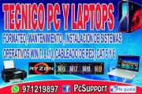

Formateo computadoras y laptop
| Servicio Técnico Reparación y Mantenimiento de Computadoras Laptop Mac y a domicilio |
 |
Servicio Técnico y Mantenimiento de Computadoras y Laptops. - Formateo e Instalación de Sistemas Operativos: Win XP, Windows 7, Windows 8, Windows 8.1 y Windows 10 |
|
| MANTENIMIENTO Y REPARACIÓN DE COMPUTADORAS Telf. 925123140 - 975026017 MANTENIMIENTO Y REPARACIÓN DE: LAPTOPS, COMPUTADORAS, DISCOS DUROS, TARJETA DE VIDEO, IMPRESORAS, REDES, ANTIVIRUS, FORMATEO E INSTALACIÓN DE PROGRAMAS |
Tecnico De Computadoras Formateo Pc Laptops A Domicilio Llamar al 925123140 ¿Sientes que tu pc o laptop ya no funciona como el dia que la compraste? ¿Esta lenta, se queda inmóvil y parece que no responde? |
||
| SERVICIO TECNICO DE COMPUTADORAS LAPTOPS IMPRESORAS REDES Y CABLEADO ESTRUCTURADO UTP PORQUE SABEMOS QUE TU CHAMBA EMPIEZA TEMPRANO ABRIMOS DESDE LAS 7.A.M AHORRE TIEMPO Y DINERO EN UN SOLO CLIC O LLAMADA! |
Técnico de Computadoras Especializado en reparación de laptop, portátiles,computadoras, formateos, mantenimiento preventivo y correctivo programas, antivirus, Internet, repuestos telf 925123140 Técnico de Computadoras |
||
| Servicio Técnico de computadoras y laptops instalación de cámaras de seguridad y alarmas Evite gastos imprevistos con una llamada! Ahorre dinero y no deje que los virus u otro problema en tu Pc o laptop te generen un gasto mayor a lo esperado. |
SOLUCION A SUS PROBLEMAS INFORMATICOS REPARAMOS LAPTOPS COMPUTADORAS SERVIDORES NOTEBOOKS VENTA DE PARTES A MENOR PRECIO SOLUCION A SUS PROBLEMAS INFORMATICOS REPARAMOS LAPTOPS COMPUTADORAS SERVIDORES NOTEBOOKS VENTA DE PARTES A MENOR PRECIO |
||
| soporte tecnico computadora laptop cableado de red camaras seguridad red Wifi Empresa Constituida en el rubro Informático en general. COMPUKING PERU KR S.A.C Empresa seria dedicada casi 10 años al cuidado de sus computadoras laptops |
MANTENIMIENTO DE PC Y LAPTOPS AHORRE TIEMPO Y DINERO EN UN SOLO CLIC O LLAMADA! ......SERVICIO TECNICO AL INSTANTE!!! SIN MOVERTE DE TU CASA, OFICINA, EMPRESA U OTROS. ...PROMOCION FIESTAS PATRIAS!!!! |
||
| Ofrezco Servicios Informaticos Mantenimiento, Reparación, Ventas, Consultoria y Servicios relacionados con computadoras de escritorio y laptops. |
Servicio Técnico de Computadoras, Laptops Impresoras e Instalación de Redes 925123140 Mantenimiento y Venta de Computadoras Personales. Mantenimiento y Venta de Laptops. |
||
| Servicio Tecnico a Domicilio PC Redes Wifi Software y Otros Nuestro servicio se caracteriza por su eficiencia, responsabilidad, seguridad, Honradez. |
 |
SERVICIO GARANTIZADO EN MANTENIMIENTO COMPUTADORAS, LAPTOP, TABLE, IMPRESORAS, CAMARAS DE SEGURIDAD Y OTROS Servicio Técnico De Computadoras Y Laptops A Domicilio Incluye: Mantenimiento y Reparacion de Computadoras - Instalación, recuperación, Formateo |
|
| Formateo de Computadoras Personales y laptops!!! Programas, Office, Autocad, Corel, Photoshop Antivirus Formateo de Computadoras Personales y laptops!!! Programas, Office, Autocad, Corel, Photoshop Antivirus Revisión, configuración, mantenimiento, instalación |
 |
SOPORTE TECNICO DE COMPUTADORAS FORMATEO A DOMICILIO Servicio Tecnico que Realizamos son: . • Formateo de Pcs y Laptop de cero • Instalación de windows 7 • Instalación de windows 8.1 • Instalación de windows 10 ultima version. |
|
| Servicio Técnico de Computadoras Formateo de PC Y Laptop a Domicilio todo Lima Nuestros servicios: • Formateo y partición del disco duro. • Instalación de Windows 7, 8.1, 10. • |
 |
SOPORTE TÉCNICO A PC MAC LINUX Nos dedicamos a brindar soporte técnico a empresas y a particulares a darles a ustedes un servicio de calidad en sistemas |
|
| SERVICIO TECNICO DE COMPUTADORAS Y LAPTOPS INSTASLACION PROGRAMAS A DOMICILIO Muchas personas tienen problemas con sus Computadoras o Laptops, pero por falta de tiempo no llevan su equipo a un taller de reparaciones durante los dias laborales. |
SERVICIO TECNICO DE COMPUTADORAS A DOMICILIO SERVICIO TECNICO DE COMPUTADORAS A DOMICILIO * FORMATEO * INSTALACION DE ANTIVIRUS * PROGRAMAS * JUEGOS * MANTENIMIENTO PREVENTIVO |
||
| Servicio Técnico de computadoras y laptops instalación de programas Evite gastos imprevistos con una llamada! Ahorre dinero y no deje que los virus u otro problema en tu Pc o laptop te generen un gasto mayor a lo esperado. |
Importadora Alquiler y Venta de Computadoras, Laptops, Fotocopiadoras, Impresoras, Proyectores x Unid y Cant. Empresa Importadora de Computadoras, Laptops, Fotocopiadoras, Proyectores y Suministros Electrónicos |
||
| Servicio Tecnico de Computadoras||Formateo de PC Laptops||Instalación Programas||Antivirus Juegos||Atencion a Domicilio LOS SERVICIOS QUE REALIZAMOS SON: • REVISIÓN Y DIAGNÓSTICO EN GENERAL • FORMATEO Y PARTICION DE DISCO DURO DESDE CERO |
 |
Reparación de Computadoras Servicio Técnico De Computadoras Y Laptops Diagnostico Gratuito Incluye: Mantenimiento y Reparacion de Computadoras - Instalación, recuperación, Formateo - Eliminación de virus. | |
| Servicio Alquiler LAPTOPs PCs Ejecutivas Proyector Impresoras Multif. Ofertas y Precios bajos..! ESPECIALISTAS EN ALQUILER Y VENTA DE EQUIPOS DE COMPUTO Y AUDIOVISUALES CON UNA AMPLIA TRAYECTORIA Y EXPERIENCIA EN EL MERCADO INFORMÁTIC |
Soporte Help Desk a Domicilio Desde ahora cliente con nosotros para reparar su computadora o laptop en la comodidad de su casa o negocio |
||
| Servicio Tecnico y reparacion de Computadoras Hago mantenimiento de Computadoras y Laptops, tambien recuperacion de Sistemas de Windows dañados, formateo e Instalación de Windows XP, Windows 7, Windows 8, Windows 8.1 y Windows 10, |
 | Técnico de Computadoras Ate Servicio Técnico de computadoras y laptops mantenimiento de impresoras cableado estructurado cat 5 y 6 configuración de router instalación de juegos más información llamar al 971219897 |
|
| Técnico de Computadoras reparación de laptop computadoras, monitores, impresora, software y harware, repuestos, antivirus, mantenimiento preventivo y correctivo. |
Instalacion De Software Formateo De Pcs
S/ 50 |
||
| Formateo Laptop Y Pc Trujillo
Llamar al 925123140 /Formateo Laptop y computadoras / Tecnico Juan Garces //Instalación Windows S/.45 |
SERVICIO TECNICO ES COMPUTADORAS LAPTO E IMPRESORAS EPSON A DOMICILIO COMAS CERCA DEL SUPERMECADO MAYORISTA UNICACHI SERVICIO TECNICO EN REPARACION DE COMPUTADORAS, LAPTOP E IMPRESORAS EPSON Y CANON A DOMICILIO FORMATEO E INSTALACION DE SISTEMAS OPERATIVOS CON TODOS SUS PROGRAMAS NECESARIOS |
||
| FORMATEO DE COMPUTADORAS Y LAPTOP's CHICLAYO Formateo, mantenimiento de Pc's y Laptop's e instalación de programas y sistemas operativos Win7, Win 8 y Win 10. |
SERVICIO TECNICO DE PC Y LAPTOP VISITA A DOMICILIO FORMATEO Y REPARACIÓN DE COMPUTADORAS SIN COSTO EXTRA TODO LIMA ¿Su Computadora o Laptop ya no funciona como cuando la compró? ¿Esta más lenta, se cuelga o se queda inmóvil y no responde? |
||
|
Servicio Tecnico Computadoras Servicio a domicilio -Todo Arequipa Las 20 primeras personas en enviar mensajes al imbox 10 soles de descuento en Mantenimiento de Computadoras |
SERVICIO TECNICO |MANTENIMIENTO DE COMPUTADORAS LAPTOPS | ANDROID Y MAC A DOMICILIO WHATSAPP: 925123140 REPARACIÓN DE COMPUTADORAS, LAPTOPS, MAC y Iphone E INSTALACIÓN DE PROGRAMAS A DOMICILIO CON ABSOLUTA GARANTÍA Y CONFIDENCIALIDAD |